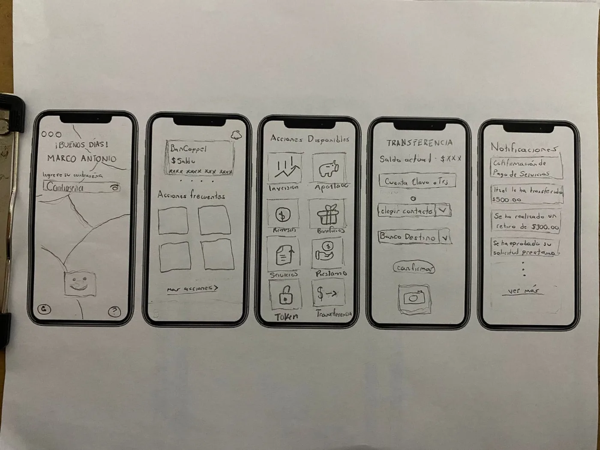
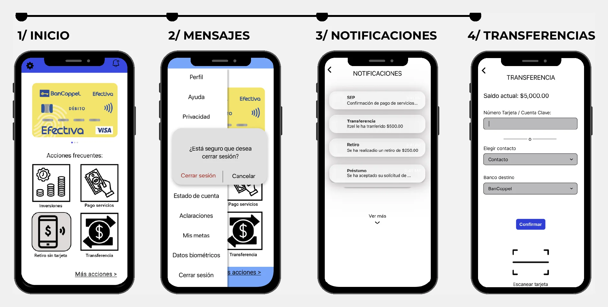
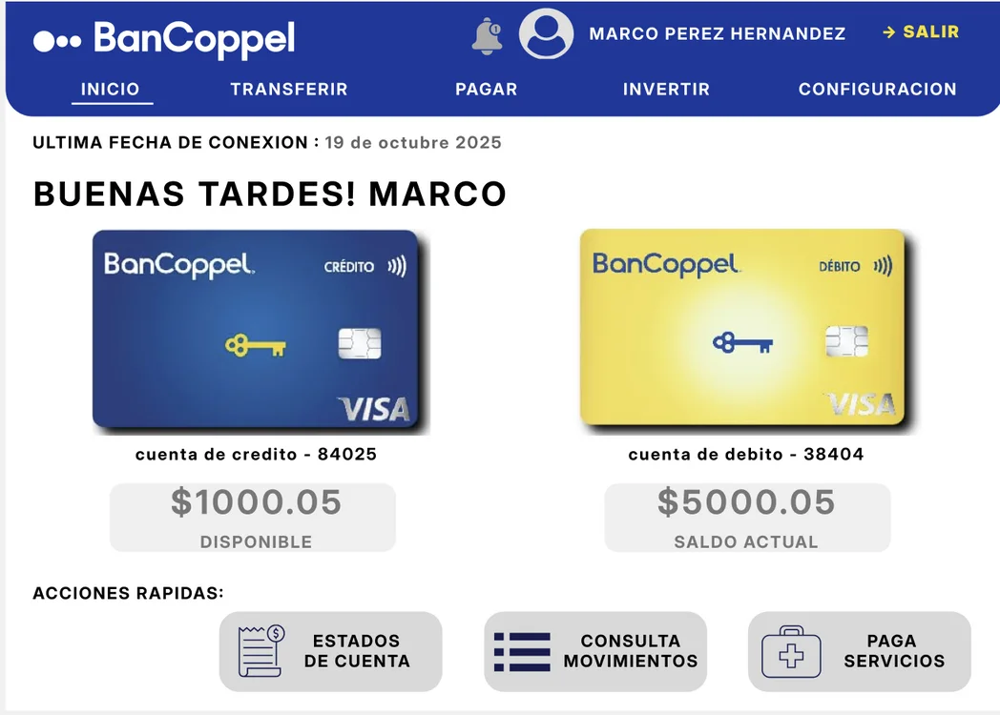
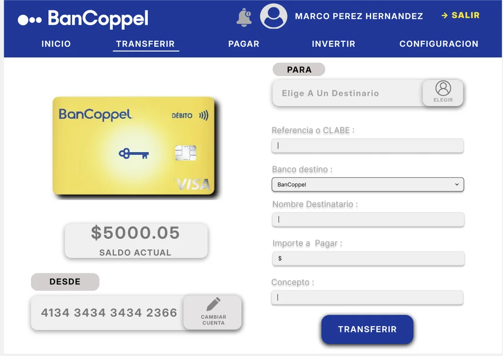

86.7% usa sobre todo transferencias
Transferir en una sola pantalla: saldo a la vista, contactos guardados y opción de escanear la tarjeta.
Caso de estudio · Investigación de usuario
Antes de mover un solo botón, le pregunté a 60 personas cómo usan la app de su banco. Sus respuestas decidieron qué rediseñar y qué dejar igual.
Rediseño conceptual con fines académicos. No tiene relación con BanCoppel ni fue encargado por la empresa.
Elegí la app de BanCoppel porque es una herramienta de uso diario para jóvenes y adultos. Cumple con lo básico, pero vi oportunidades en tres frentes: claridad visual, organización de los procesos y percepción de seguridad.
El riesgo era rediseñar según mi gusto. Por eso el proyecto empezó con una pregunta, no con una pantalla:
¿Qué les estorba de verdad a las personas cuando usan la app de su banco?
Diseñé una encuesta de experiencia en banca móvil en Google Forms y la difundí en Instagram, Facebook y TikTok. Conseguir respuestas fue el mayor reto: llegué a 60 personas, el doble del mínimo de 30 que me había fijado para poder analizar los datos.
El dato más interesante fue una contradicción. Casi todos dicen que la app es fácil, y aun así casi todos reportan problemas al usarla.
"Fácil" no significa "sin fricción". La gente ya aprendió a usar la app; lo que pide es que sea más rápida y más clara.
Además, casi 1 de cada 4 personas (23.7%) ha necesitado ayuda de alguien más para usar la app. Al preguntar qué mejorarían, las respuestas apuntaron al mismo lugar:
Cada decisión del rediseño sale de un hallazgo de la encuesta.
86.7% usa sobre todo transferencias
Transferir en una sola pantalla: saldo a la vista, contactos guardados y opción de escanear la tarjeta.
60% entra a consultar su saldo
El saldo y la tarjeta son lo primero que se ve al abrir la app, sin tocar nada.
29.1% se confunde en los procesos
Una sección de "Acciones frecuentes" con pocos botones grandes, en lugar de menús cargados.
80% sufre lentitud
El diseño no acelera un servidor, pero sí quita pasos: menos pantallas entre abrir la app y terminar la tarea.
73.3% prefiere huella o rostro
Recomendación para la siguiente iteración: acceso biométrico como opción principal, antes que la contraseña.
Con las decisiones claras, bocé las pantallas a mano para probar la estructura rápido, las pasé a wireframes en Figma y al final construí una versión web con HTML, CSS y una base de datos MySQL para simular saldos y transferencias.




Yo habría empezado por lo visual. La encuesta mostró que el dolor principal era la lentitud y los procesos confusos.
Una app puede sentirse fácil y aun así frustrar. Preguntar por problemas concretos reveló lo que una sola calificación escondía.
Nadie contesta una encuesta porque sí. Tuve que difundirla en redes y entre conocidos para llegar a 60 personas.